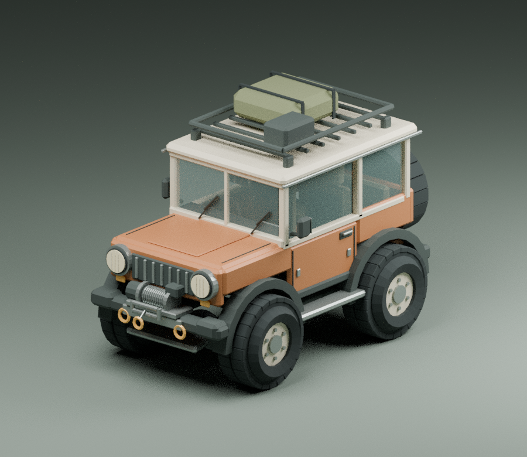

彩虹果冻乐高彩虹积木 · 软乎乎的摩天楼3D 果冻积木 · 搭建与地震彩虹果冻乐高把彩虹积木一块块扣好，搭起会摇晃的摩天楼。戳一戳、倒一把，再来场地震，看它们软乎乎地倒下。支持手机触控和合成音效。打开积木盒查看代码
JELLY LAB3D 透明果冻 · 软乎乎的快乐3D 透明互动玩具 · 鼠标与触屏彩虹果冻实验室揉捏一块晶莹透光的 3D 彩虹果冻，转动视角观察表面与厚度，划一刀分成小块，钉住或慢慢融化。自由调整颜色、形状、弹性与重力。捏一块果冻查看代码
RIDGEBOUND山野之间 · 原创山林越野Godot 越野探索 · MIT 开源山野之间驾驶原创四驱车探索山林与隐藏雪线，体验车内视角、独立悬挂、绞盘救援和小屋维修。支持手机、手柄及自定义方向盘与踏板。启程探索查看开源代码
SCIENCELAB初中理化生实验室 · 浏览器互动课件物理 · 化学 · 生物 / AGPL 开源初中理化生实验室按人教版教材浏览实验目录，调节条件、观察现象，学习规范计算与实验考点。保留早期 Flash 课件风格，现代浏览器直接运行。进入实验室查看开源代码
SUNRISE COAST日出海岸 · 1.0 Beta独立浏览器驾驶游戏 · BetaSUNRISE COAST日出海岸持续更新。旧城、独立测试版与轻量浏览器整合版分别保留进度。进入 SUNRISE COAST轻量整合测试原独立测试版